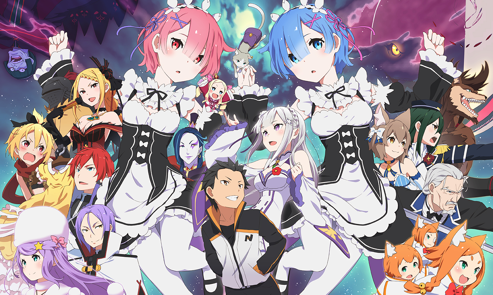

Re:ゼロから始める異世界生活
あらすじ
コンビニ帰りに突如、異世界に召喚された引きこもり高校生の少年ナツキ・スバルは、
早々と命の危機に見舞われる。その窮地を救ってくれた、ネコ型精霊パックをお供につれた、
サテラと名乗るハーフエルフの銀髪少女に恩返しをするため、スバルは彼女の物探しに協力する。
フェルトという名の少女に奪われたという徽章の手がかりが掴めたと思った矢先、2人は暗闇の
中で何者かに襲撃され命を落としてしまう。目を覚ましたスバルは、召喚された時点に戻っていた。
それから何度かの死を繰り返すうち、スバルは自分がこの世界である能力を得たことを知る。
